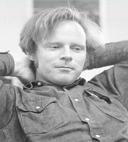

Robert W. Floyd | |
|---|---|
 Floyd c. 1970s | |
| Born | Robert Willoughby Floyd June 8, 1936 New York City, New York, U.S. |
| Died | September 25, 2001 (aged 65) Stanford, California, U.S. |
| Education | University of Chicago (BA, BS) |
| Known for | Floyd–Warshall algorithm Floyd–Steinberg dithering Floyd's cycle-finding algorithm Floyd's triangle ALGOL |
| Spouse(s) | Jana M. Mason; Christiane Floyd (née Riedl) |
| Children | 4 |
| Awards | Turing Award (1978) Computer Pioneer Award (1991) |
| Scientific career | |
| Fields | Computer science |
| Institutions | Illinois Institute of Technology Carnegie Mellon University Stanford University |
Doctoral students | |
Robert W. Floyd[1] (born Robert Willoughby Floyd; June 8, 1936 – September 25, 2001) was an American computer scientist. His contributions include the design of the Floyd–Warshall algorithm (independently of Stephen Warshall), which efficiently finds all shortest paths in a graph and his work on parsing; Floyd's cycle-finding algorithm for detecting cycles in a sequence was attributed to him as well. In one isolated paper he introduced the important concept of error diffusion for rendering images, also called Floyd–Steinberg dithering (though he distinguished dithering from diffusion). He pioneered in the field of program verification using logical assertions with the 1967 paper Assigning Meanings to Programs. This was a contribution to what later became Hoare logic. Floyd received the Turing Award in 1978.
Born in New York City, Floyd finished high school at age 14. At the University of Chicago, he received a Bachelor of Arts (B.A.) in liberal arts in 1953 (when still only 17) and a second bachelor's degree in physics in 1958. Floyd was a college roommate of Carl Sagan.[2]
Floyd became a staff member of the Armour Research Foundation (now IIT Research Institute) at Illinois Institute of Technology in the 1950s. Becoming a computer operator in the early 1960s, he began publishing many papers, including on compilers (particularly parsing). He was a pioneer of operator-precedence grammars, and is credited with initiating the field of programming language semantics in Floyd (1967). He was appointed an associate professor at Carnegie Mellon University by the time he was 27 and became a full professor at Stanford University six years later. He obtained this position without a Doctor of Philosophy (Ph.D.) degree.
He was a member of the International Federation for Information Processing (IFIP) IFIP Working Group 2.1 on Algorithmic Languages and Calculi,[3] which specified, maintains, and supports the programming languages ALGOL 60 and ALGOL 68.[4]
He was elected a Fellow of the American Academy of Arts and Sciences in 1974.[5]
He received the Turing Award in 1978 "for having a clear influence on methodologies for the creation of efficient and reliable software, and for helping to found the following important subfields of computer science: the theory of parsing, the semantics of programming languages, automatic program verification, automatic program synthesis, and analysis of algorithms".[6]
Floyd worked closely with Donald Knuth, in particular as the major reviewer for Knuth's seminal book The Art of Computer Programming, and is the person most cited in that work. He was co-author, with Richard Beigel, of the textbook The Language of Machines: an Introduction to Computability and Formal Languages.[7] Floyd supervised seven Ph.D. graduates.[8]
Floyd married and divorced twice, first with Jana M. Mason and then computer scientist Christiane Floyd, and he had four children. In his last years he suffered from Pick's disease, a neurodegenerative disease, and thus retired early in 1994.[6]
His hobbies included hiking, and he was an avid backgammon player:
We once were stuck at the Chicago O'Hare airport for hours, waiting for our flight to leave, owing to a snow storm. As we sat at our gate, Bob asked me, in a casual manner, "do you know how to play backgammon?" I answered I knew the rules, but why did he want to know? Bob said since we had several hours to wait perhaps we should play a few games, for small stakes of course. He then reached into his briefcase and removed a backgammon set.
My Dad taught me many things. One was to be wary of anyone who suggests a game of pool for money, and then opens a black case and starts to screw together a pool stick. I figured that this advice generalized to anyone who traveled with their own backgammon set. I told Bob that I was not going to play for money, no way. He pushed a bit, but finally said fine. He proceeded instead to give me a free lesson in the art and science of playing backgammon.
I was right to pass on playing him for money—at any stakes. The lesson was fun. I found out later that for years he had been working on learning the game. He took playing backgammon very seriously, studied the game and its mathematics, and was a near professional. I think it was more than a hobby. Like his research, Bob took what he did seriously, and it is completely consistent that he would be terrific at backgammon.
{kind=link}